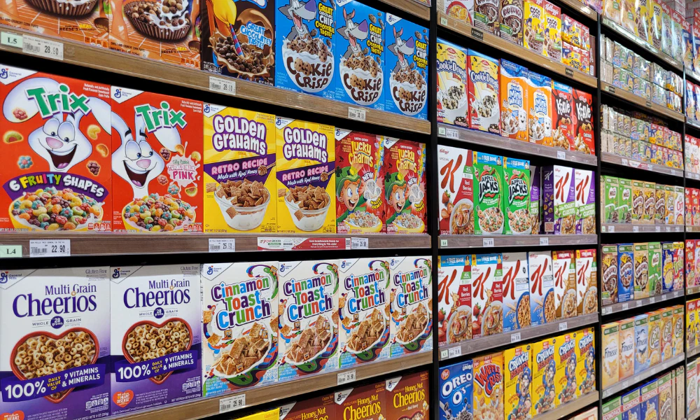

Why Cereal Is The Best Quick Snack/Meal

This image shows different types of cereal in a supermarket on a shelf.
Cereal has been around for a very very veryyy long time. Since it's beginning long ago
there have been several new flavors of cereal for existing brands and a ton of new brands have also joined
along. Cereal is super super easy to get and usually inexpensive. Cereal is a top tier competitor to higher
caloric foods but with cereal the calories are lower, and can still fill a person up quickly before getting
on with their day.
Ingredients For Cereal (SIMPLE)
- Cereal of your choice
- Milk
- Bowl
- Spoon
Steps To Create The Perfect Bowl Of Cereal
- First, grab a bowl
- Secondly, grab the milk
- Third, grab the cereal you are so desiring
- Fourth, pour the cereal in the bowl
- After pouring the cereal, pour the milk
- After the cereal is poured finally grab a spoon and eat that up